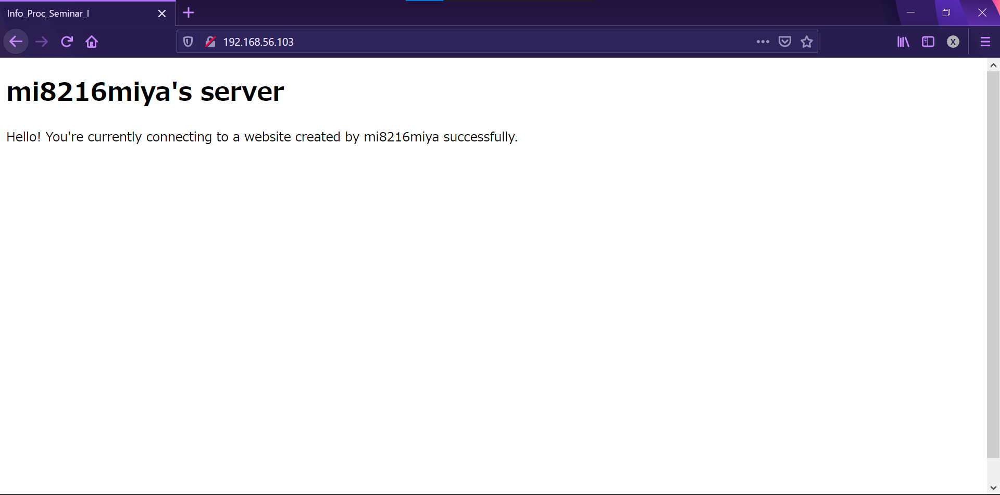

情報処理演習 課題_サーバ構築
2021/05/13(木)
mi8216miya
1. 各種ダウンロード
1. VirtualBox クライアント・拡張パッケージ
クライアント / Windows
拡張パッケージ
2. CentOS
CentOS .isoファイル / Linux - x86_64 (2009)
2. 各種インストール
1.VirtualBox
- クライアント
デバイスソフトウェアをインストール
- 拡張パッケージ
ライセンスに同意して，ダウンロードした拡張パッケージファイル(.vbox-extpack)をインストール
2. CentOS
- 仮想マシン作成
タイプ: Linux, バージョン: **Red Hat (64-bit)**を選択
※64-bit版が選択できない場合，BIOSにアクセスして「仮想化」をオンにする
(En: Intel Virtualization Technology)
- 各種設定
- ネットワーク
ネットワークタブにある，アダプター1「NAT」に加え，アダプター2「ホストオンリーアダプタ」を追加
※ホストマシン上のアプリケーション(Tera term等)から仮想マシンに接続するために利用
- ストレージ
コントローラー: IDEとして，ダウンロードした.isoファイルを選択
- インストールフェーズ
※以降，VirtualBox内の仮想環境では「右Ctrl」キーでズームアウトする
(マウスカーソルが仮想環境内から外れ，Windowsの操作ができるようになる)
- 言語・地域
Japanese; Japanを選択
- ネットワークとホスト名
Ethernet (enp0s3およびenp0s8)に対し，「オン」にする
それぞれ設定/全般タブから，「この接続が利用可能になったときは自動的に接続する」にチェックを入れる
- インストール先
何もせずそのまま「完了」をクリック
- 日付と時刻
歯車ボタンを押し，ntp.nict.jpをNTPサーバとして追加(「+」マークを押す)
- rootパスワード，ユーザ作成
root(管理者)のパスワードを決定し，別途作成するユーザのID/パスワードを入力する
- 再起動
インストールが完了したら「再起動」ボタンを押して再起動
3. 初期設定
1. 初回ログイン・再起動
rootでログインし，シャットダウン/再起動を行う
【コマンド】
すぐにシャットダウンする場合は $ shutdown -h now
※shutdown(シャットダウン)操作のうち，halt(停止)をnow(今)実行，という意味
再起動の場合は-hではなく-rオプションをつける
2. rootでのログイン禁止
- プライベートIPアドレスの確認
SSH接続で使用するためのプライベートIPアドレスを，下記のコマンドで調べる
ip addr
⇒3: enp0s8欄のinet以降にあるのがプライベートIPアドレス(例: 192.168.56.102)
※1.はローカルループバック，2.はグローバルIPアドレス?
※ifconfigコマンドは古いためバージョンの新しいCentOSでは利用できない
net-toolsパッケージをインストールすれば使用可能(しなくてよい)
$ sudo yum install net-tools
- ターミナルでのログイン
Tera termなどのターミナルアプリでログインする
IPアドレスは先ほど見つけたもの，ユーザ名はrootを入力しログイン
- 設定の書き換え
viというエディタで/etc/ssh/パスにあるsshd_configファイルを編集する
$ vi /etc/ssh/sshd_config
#PermitRootLogin yesをPermitLootLogin noに変更
※先頭のコメントアウトを外すこと，:wqで保存することを忘れずに
$ grep 検索文字列 検索ファイル で編集できたかを確認できる
- sshdの再起動，再ログイン
$ systemctl restart sshdと入力し，設定を適用
再度rootでログインしようとして，失敗すればOK
- ユーザの管理者グループへの追加
- rootへのスイッチ
今度はユーザアカウントでログインし，$ su -と入力し，rootのパスワードを入力
- 管理者グループへの追加
/etc/groupの"wheel"を含む行の末尾にユーザIDを追加
$ vi /etc/group
例: wheel:x:10:pkmiya ユーザ名"pkmiya"を追加
- 追加できたかどうかの確認
ユーザディレクトリの外に対してコマンドを実行するなど，rootでしか実行できないコマンドが実行できるようになる
例: $ touch /hoge.txt(ストレージ直下でhoge.txtファイルのタイムスタンプを更新)は実行できないが，$ sudo touch /hoge.txtは実行可能
⇒$ sudo rm /hoge.txt(rmコマンド)でファイルを削除可能
3. 各種更新・インストール
- CentOSの更新
パッケージリストを更新する
$ sudo yum update
実行できない場合，下記コマンドでextraのレポジトリを無効にして再度実行
$ sudo yum update --disablerepo=extras
- nanoのインストール
$ sudo yum install nano
※viで十分
4. Apacheの実装
参考Webサイト: Qiita - CentOSでApacheをインストールし起動する
1. 表示用htmlファイルの作成・転送
- 表示用htmlファイルの作成
エディタ(メモ帳やVS Code，Atomなど)で適当なhtmlファイルを作成(以下，一例)
<!DOCTYPE html>
<html lang="ja">
<head>
<meta charset="UTF-8">
<meta http-equiv="X-UA-Compatible" content="IE=edge">
<meta name="viewport" content="width=device-width, initial-scale=1.0">
<title>Example</title>
</head>
<body>
<h1>mi8216miya's server</h1>
<p>Hello! You're currently connecting to a website created by mi8216miya successfully.</p>
</body>
</html>
- 表示用htmlファイルの転送
TeraTermの場合，SSH SCPで転送ファイル，転送先を指定して転送
2. HTTPサーバへの公開
- Apacheのインストール
下記コマンドを入力し，Apacheをインストールする
※-yコマンドはストレージの使用などに際し，確認せずに無視するということ
$ sudo yum -y install httpd
インストールができれば，下記のコマンドを入力してパスが表示される
$ which httpd
- 設定ファイルの変更
下記コマンドを入力し，以下のように値を変更する
$ sudo vi /etc/httpd/conf/httpd.conf
#ServerName www.example.com:80 を ServerName www.example.comに変更
$ httpd -tコマンドを入力して，構文チェックが可能(Syntax OKと表示されればよい)
- Apacheの起動
下記コマンドを入力して，Apacheを起動する
$ sudo systemctl restart httpd
なお，自動で起動したい場合は以下のように入力する
$ sudo systemctl enable httpd
- ファイアウォールの設定
下記のコマンドを入力して，HTTPプロトコルで使用される80番ポートへの外部からのアクセスを許可し，設定を適用する
$ sudo firewall-cmd --permanent --add-service=http
$ sudo firewall-cmd --reload
- ブラウザからのアクセス
ブラウザからアクセスし，Apacheのテストページが表示されるか確認する．(Testing 123...と出れば成功)
- htmlファイルの公開
先ほど転送したファイルをmvコマンドを使って/var/www/html/内に移動させ，再度アクセスする
自分の場合，上記に示したSS.htmlを用いると，下記のように表示された

※403 Forbidden と表示される場合
自分の場合，下記のようにSELinuxを無効化して表示されるようにした
SELinuxが有効の場合，DocumentRootへのアクセスが拒否されている可能性がある
$ getenforceと入力してenforcingと出力された場合，/etc/selinux/configの設定を変更し，サーバを再起動することで表示される
$ sudo vi /etc/selinux/config
SELINUX = enforcing から SELINUX = disabled に書き換え
以上